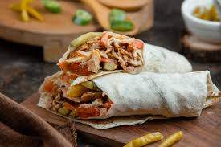

Home
Shawarma Recipe

Shawarma
Shawarma is a Middle Eastern street food made of marinated, slow-roasted meat
that is shaved from a vertical rotisserie and served in a wrap or as a platter.
Ingredients:
- 2 lbs chicken thighs
- 2 Tbsp olive oil
- 1/4 cup white vinegar
- 1 lemon, juiced
- 2 tsp garlic powder
- 1 tsp turmeric
- 1 tsp cumin
- 1 tsp coriander
- 1 tsp allspice
- 2 tsp smoked paprika
- 1 tsp cardamom
- 1/2 tsp clove
- 1.5 tsp salt
- 1/2 tsp cayenne pepper
Steps:
- Marinade chicken – Combine the marinade ingredients in a large ziplock bag.
Add the chicken, seal, the massage from the outside with your hands to make sure each piece is coated.
Marinate 24 hours (minimum 3 hours).
- Preheat stove or BBQ – Heat a large non-stick skillet with 1 tablespoon over medium high heat,
or lightly brush a BBQ hotplate/grills with oil and heat to medium high. (See notes for baking)
- Cook chicken – Place chicken in the skillet or on the grill and cook the first side for 4 to 5 minutes until nicely charred.
Turn and cook the other side for 3 to 4 minutes (the 2nd side takes less time).
- To make a wrap, get a piece of flatbread and smear with Garlic Sauce. Top with a bit of pickles and Chicken Shawarma. Roll up and enjoy!